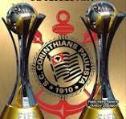

O Sport Club Corinthians Paulista, conhecido simplesmente como Corinthians, é um dos clubes mais tradicionais e populares do futebol brasileiro. Fundado em 1º de setembro de 1910, no bairro do Bom Retiro, na cidade de São Paulo, o clube nasceu da iniciativa de um grupo de operários que sonhava em criar uma equipe que representasse o povo.
O nome Corinthians foi inspirado no time inglês Corinthian F.C., que realizava excursões pelo mundo na época. Desde sua fundação, o clube construiu uma forte ligação com as camadas populares, tornando-se conhecido como o “Time do Povo”.

Ao longo de sua história, o Corinthians conquistou inúmeros títulos importantes. No cenário estadual, é um dos maiores vencedores do Campeonato Paulista. Em nível nacional, conquistou vários títulos do Campeonato Brasileiro, consolidando-se entre os maiores clubes do país. Um dos momentos mais marcantes da história corintiana aconteceu em 2012. Naquele ano, o Corinthians conquistou pela primeira vez a Copa Libertadores da América de forma invicta. Poucos meses depois, o clube venceu o Mundial de Clubes da FIFA ao derrotar o Chelsea F.C. por 1 a 0 na final disputada no Japão, alcançando uma das maiores glórias de sua história.